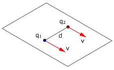
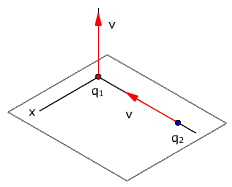
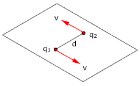

 |
Un protón y un electrón
se mueven con la misma velocidad v siguiendo trayectorias paralelas
separadas una distancia d. Calcula la fuerza electromagnética
mutua cuando ambos están sobre una línea perpendicular
a sus trayectorias |
|
 |
Un electrón pasa
por el origen con velocidad v1 = v k, en ese momento
un protón está en el punto (0, d, 0) moviéndose
con velocidad v2 = -v j Determina las fuerzas mutuas
entre ellos |
|
|
Dos conductores rectilíneos,
paralelos y de gran longitud están separados 10 cm y por
ellos circulan corrientes de 2 A y 8 A en el mismo sentido.
Calcular la fuerza mutua, por unidad de longitud, entre ellos |
|
|
El conductor CD tiene una
densidad lineal de 5 g/m y puede deslizar por las guías verticales
manteniendo el contacto eléctrico. Siendo la intensidad de
corriente 50 A, calcula la posición de equilibrio del conductor
CD |
|
Un hilo conductor rectílineo e indefinido,
situado en el vacío sobre el eje OZ de un sistema de referencia
cartesiano (OXYZ), transporta una corriente eléctrica de intensidad
2 A en el sentido positivo de dicho eje. Calcular la fuerza magnética
que actuará sobre una partícula, con carga 5 C, en el instante
en que pasa por el punto (0, 4 ,0) m con una velocidad v = 20 j (m/s) |
 |
Dos electrones que viajan en sentidos
contrarios con la misma velocidad v se cruzan a una distancia d.
Determina la fuerza entre ellos |
|
Un hilo conductor rectilíneo y de
longitud infinita está ubicado sobre el eje OZ y por él
circula una corriente continua de intensidad I, en sentido positivo de
dicho eje. Una partícula con carga positiva Q, se desplaza con
velocidad v sobre el eje OX, en sentido positivo del mismo.
Determina la dirección y sentido de la fuerza magnética
que actúa sobre la partícula |
a) En una línea de alta tensión
se tienen dos cables paralelos y horizontales separados entre sí
2 m. Los dos cables transportan una corriente eléctrica de 1 kA
¿Cuál será la intensidad del campo mag-nético
generado por esos dos cables en un punto P situado entre los dos cables
equidistante de am-bos y a su misma altura cuando el sentido de la corriente
es el mismo en ambos? ¿Y cuando el senti-do de la corriente es
opuesto en un cable respecto al otro cable?
b) En este último caso, cuando
las corrientes tienen sentidos opuestos, calcular la fuerza (Módulo,
di-rección y sentido) que ejerce un cable por unidad de longitud
del segundo cable |